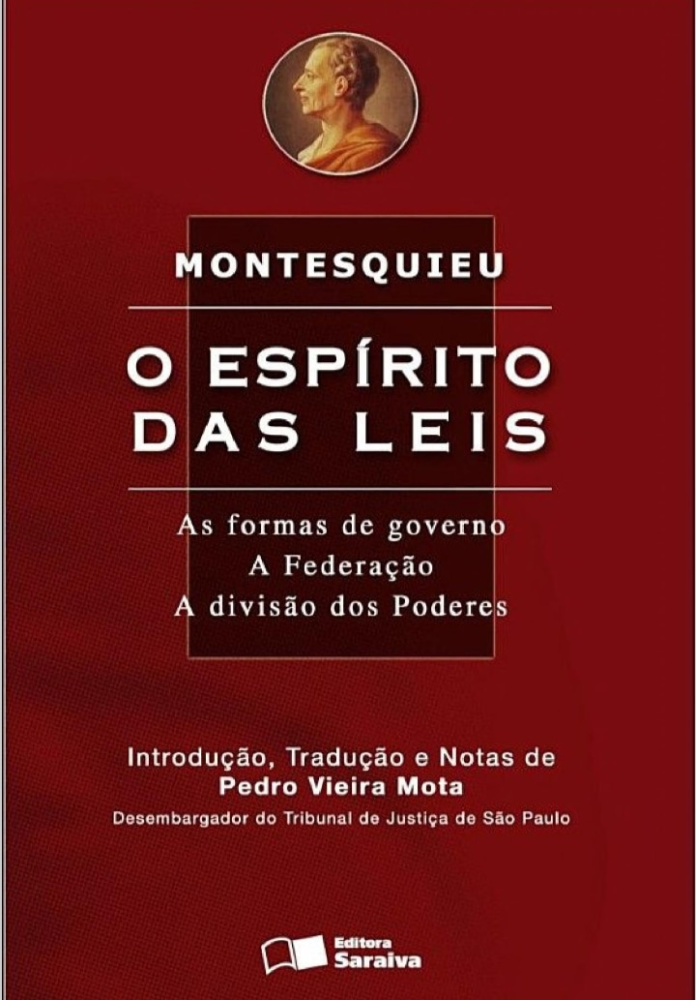

Principais obras de Montesquieu
O filósofo escreveu dezenas de tratados, ensaios e artigos, que versam, em sua maioria, sobre política.
No entanto, podemos destacar duas publicações como principais dentro de sua vasta obra.
Persas:
Nessa obra literária epistolar, Montesquieu criou dois personagens persas, Usbek e Rica, que viajam pela Europa e chegam a Paris. Vivem aventuras e desventuras e trocam cartas com conterrâneos contando seus feitos.
Cartas Persas foi escrito em tom cômico e satírico
Espírito das Leis:
O título dessa obra é um pouco maior do que essa redução. O título completo é “O Espírito das Leis: Ou das Relações que as Leis devem ter com a Constituição de cada Governo, com os Costumes, o Clima, a Religião, o Comércio etc.”. Esse livro condensa toda a teoria política de Montesquieu. Ele fala das leis e da necessidade de criação de um corpo de leis para garantir, inclusive, a liberdade. Fala também da importância do governo e do Estado, além de expor a teoria da tripartição do poder.
